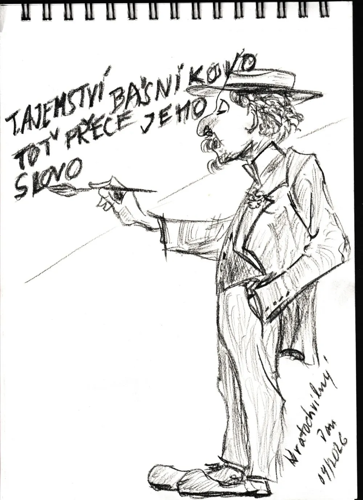

Už se těch veršů nějak nastřádalo. Je toho sice na knihu nikoli tučnou, ale řekněme lehce obéznější. A tak jsem začal přemýšlet nad vydáním své knižní prvotiny.
Nevím proč, ale do hlavy mi při mé „vrozené“ skromnosti skočilo pár veršíků – taková drobná omluva za to, že jsem si vůbec troufnul. Posuďte sami, jak moc je mi skromnost vlastní.
Není to, lidé, vaše vina,
že vyšla tahle prvotina.
Drazí básníci, jsem trošku nesmělý,
stydím se, že vám lezu do zelí.
Však věřte, tyto verše,
vám prostě chyběly.
